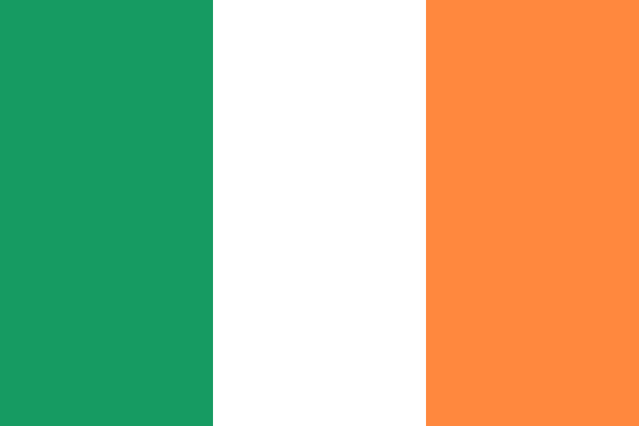

Ireland country file
A network case without a location
No reliable evidence of an official Rossotrudnichestvo office, Russian House or formal Russkiy Mir centre was found for Ireland. What is documented instead are advanced negotiations by Trinity College in 2010 on Ireland’s first Russian cultural centre, private cultural organisations and a compatriots network close to the embassy. The correct term is therefore partner and diaspora network.
No official location evidenced
Partner and diaspora network active
At a glance
| Official location |
Not verified. Neither Rossotrudnichestvo’s partner list nor the Russkiy Mir centre catalogue contains an Irish entry. This is a documented negative finding, not proof of non-existence |
| Documented project |
On 10 September 2010 Trinity College announced advanced negotiations on Ireland’s first Russian cultural centre – with Russkiy Mir, Dublin City Public Libraries and the city council |
| Outcome |
No opening, address, legal ownership or later closure could be verified in the sources examined |
| Treaty situation |
General agreement on cultural cooperation between Ireland and the USSR of 22 July 1991; no centre treaty found |
| Network structures |
Private cultural organisations, a Russian-language children’s library in Galway (2014) and a compatriots network close to the embassy |
| “Matryoshka” |
Appears in Russkiy Mir reports in 2026. That is evidence of activity – it is not listed as a formal representation in the official catalogue |
| Measures |
Expulsion of four senior Russian embassy staff on 29 March 2022 under Article 9 of the Vienna Convention |
| Status April 2025 |
The official list of accredited missions names the Russian embassy; no separate cultural centre appears in the entries examined |
Activity is not status
The “Matryoshka” centre illustrates the core problem of the Irish case: a Russian foundation page reports on its activities, yet it does not appear in the formal centre catalogue. Evidence of activity does not establish representative status. Nor does a compatriots conference attended by the embassy prove that the network is officially represented. Reading rule: “Open” means the statement is not documented in the public sources examined. It is not proof of the contrary. EU listing, national enforcement, political non-cooperation, treaty termination and actual closure of operations are assessed separately.
Timeline
22 July 1991
Ireland and the USSR conclude a general agreement on cultural cooperation in Moscow (Irish Treaty Series No 15/1991). It establishes no centre.
10 September 2010
Trinity College states that it is close to concluding negotiations with Dublin City Public Libraries and the city council and with the Russkiy Mir Foundation on Ireland’s first Russian Cultural Centre. No conclusion is evidenced.
13 September 2014
A Russian-language children’s library opens in Galway, run by a local Russian Cultural Centre Alliance and financed by the charitable Russian Cultural Foundation. This is a community initiative, not an evidenced Rossotrudnichestvo representation.
29 March 2022
Ireland expels four senior Russian embassy staff under Article 9 of the Vienna Convention on Diplomatic Relations.
21 July 2022
The EU lists Rossotrudnichestvo. The Central Bank of Ireland and the foreign ministry publish general guidance on implementing the restrictive measures.
12 April 2025
The official Irish list of accredited diplomatic missions names the Russian embassy; no separate Russian cultural centre appears in the entries examined.
10 December 2025
A Russian compatriots conference takes place in Dublin with the participation of the ambassador or the embassy. This evidences an active network, not its official representative status. The source is partisan.
2026
Russkiy Mir reports on the activities of the “Matryoshka” centre in Ireland. It still does not appear in the foundation’s formal centre catalogue.
Legal basis
The general agreement on cultural cooperation between Ireland and the USSR of 22 July 1991 provides a bilateral framework. It establishes no centre and confers no status on any location. Its full text and current effect are open.
No centre treaty was found. Trinity College’s 2010 announcement evidences an intention and advanced negotiations – not their conclusion. Whether the negotiations were formally ended or led to a short-lived institution no longer visible today is open.
Measures since 2022
On 29 March 2022 Ireland expelled four senior Russian embassy staff. The measure targets individuals and is not attributed to any cultural location.
The Central Bank of Ireland and the foreign ministry publish general guidance on implementing the EU sanctions. Whether applications to authorise payments to Rossotrudnichestvo were made after July 2022 is open.
Assessment
Network rather than location
Ireland is a network case, not a location case. There is no official property that could be closed – and yet funding and partner structures linked to Russian state-affiliated foundations exist.
For Germany this imposes a twofold requirement. A survey must not treat every Russian-language cultural centre as a state mission abroad. Legal entity, official cataloguing, contracts, financial flows and embassy direction must be established first.
Conversely, funding and partner networks can be politically relevant even where no closable official property exists. The Irish case warns against both errors at once.
Sources
Where the individual document could be identified unambiguously, the link points straight to it – for example to official gazettes, treaty publications and parliamentary documents. For the remaining items the underlying research file records only publisher, title and date, not the full document address; there the link points to the source domain on record. Those deep links are expressly outstanding and will be added once the citation is unambiguous.
-
Rossotrudnichestvo – partner organisations
Retrieved 14 August 2026; no Irish entry found. Operator source, negative search.
https://rs.gov.ru
-
Russkiy Mir Foundation – catalogue of Russian centres
Retrieved 14 August 2026; no Irish entry found. Operator source, negative search.
https://russkiymir.ru
-
Trinity College Dublin – negotiations on Ireland’s first Russian cultural centre, 10 September 2010
Primary source for the announcement of negotiations.
https://www.tcd.ie
-
Russkiy Mir Foundation – report on the Irish “Matryoshka” centre, 2026
Operator source, direct evidence of the foundation’s account; no evidence of formal representative status.
https://russkiymir.ru
-
Government of Ireland – Irish Treaty Series No 15/1991
Agreement between Ireland and the USSR on cultural cooperation, signed in Moscow on 22 July 1991. Primary source for the metadata.
https://www.gov.ie
-
BAILII – metadata on the 1991 agreement
Supplementary citation.
https://www.bailii.org
-
Government of Ireland – statement by the Minister for Foreign Affairs, 29 March 2022
Expulsion of four Russian embassy staff. Primary source.
https://www.gov.ie
-
Government of Ireland – diplomatic missions in Ireland, updated 12 April 2025
Names the Russian embassy; no separate cultural centre in the entries examined. Primary source and negative finding.
https://www.gov.ie
-
Vseruss – compatriots conference in Dublin, 10 December 2025
Partisan source; evidences network activity, not official status.
https://vseruss.com
-
Russian Bridge Ireland – information in English
Retrieved 14 August 2026; operator source, direct evidence of the organisation’s private status.
https://russianbridge.ie
-
The Irish Times – “Russian-language library for children opens in Galway school”, 13 September 2014
Secondary source on the community initiative.
https://www.irishtimes.com
-
Central Bank of Ireland – EU restrictive measures relating to Ukraine
Retrieved 14 August 2026; general implementation guidance. Primary source.
https://www.centralbank.ie
-
Russkiy Mir Foundation – “What is a Russian Center?”
Retrieved 14 August 2026; definition of the formal centre concept. Operator source.
https://russkiymir.ru
-
Government of Ireland – restrictive measures (sanctions)
Published 13 April 2023, updated 12 April 2025. Primary source.
https://www.gov.ie
-
EUR-Lex – Implementing Regulation (EU) 2022/1270
EU listing of Rossotrudnichestvo of 21 July 2022.
https://eur-lex.europa.eu/eli/reg_impl/2022/1270/oj/eng
Open questions
- Were the 2010 negotiations formally ended, or did the project result in a short-lived institution no longer visible today?
- What is the legal form and funding of “Matryoshka”, and are there direct contracts or payments with Russkiy Mir, Rossotrudnichestvo or the embassy?
- Do the archives of Dublin City Council and Public Libraries contain a final partnership agreement or decision?
- Were applications to authorise payments to Rossotrudnichestvo made after July 2022?